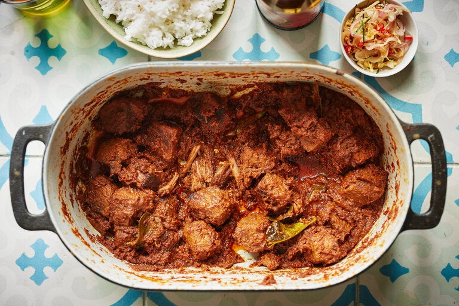

Rendang Daging

Rendang is one of the national dishes of Indonesia, and its tender, caramelized meat is usually reserved for special events, such as weddings, dinners with important guests, and Lebaran, the Indonesian name for Eid al-Fitr, which marks the end of Ramadan
Ingredients
- ¼ cup desiccated coconut
- 1 tbsp vegetable oil
- 1.5kg (3.3 lb) beef short ribs, English cut either left in long pieces or cut into smaller chunks
- 2 whole star anise
- 6 green cardamom pods, bruised
- 1 lemongrass stalk, bruised, cut into 5cm batons
- 2 cups coconut milk
- 1 ½ tbsp shaved palm sugar
1 tbsp fish sauce
- 6 makrut lime leaves, plus extra finely sliced leaves to serve
steamed rice to serve
Rendang Paste
- 10 dried long red chillies
- 2 lemongrass stalks, white part only, bruised, finely chopped
- 5cm (2″) piece galangal, peeled, roughly chopped
- 5cm (2″) piece ginger, peeled, roughly chopped
- 4 Asian red shallots, roughly chopped
- 6 garlic cloves, roughly chopped
- 2 tsp ground cumin
- 2 tsp ground coriander
- 1 tsp sea salt
Steps
-
For the rendang paste, soak the dried chillies in hot water for 10 minutes to soften. Drain (reserving the soaking liquid) and roughly chop the softened chillies.
-
Place the chillies and remaining rendang paste ingredients in a food processor and blend until smooth. Add 1-2 tablespoons of the chilli soaking water if the paste is too thick to blend. Set aside.
-
Toast the desiccated coconut in a dry frying pan over medium-high heat until golden brown. Transfer to a bowl and set aside.
-
Place a large, heavy-based saucepan or non-stick wok over high heat. Add the vegetable oil and sear the beef, in batches, for 2-3 minutes each side or until evenly browned. Transfer the beef to a plate.
-
Place the same saucepan back over medium heat (there should be at least 1 tablespoon of oil and fat in the saucepan but if not, add a little vegetable oil) and add the star anise, cardamom pods and lemongrass. Cook, stirring for a minute until fragrant. Add rendang paste and cook for 2 minutes. Stir through coconut milk, toasted coconut, palm sugar and fish sauce. Add the seared beef and the makrut lime leaves. Reduce the heat to low, cover and simmer for 2 hours, stirring every so often (add a little more water if the sauce becomes too thick).
-
Remove the lid and use a large spoon to remove excess oil and fat from the top of the sauce. Simmer for a further 30 minutes, uncovered, or until the sauce is thick and gravy-like. Remove from heat. Remove the star anise. Top with finely sliced makrut lime leaves and serve with steamed rice.